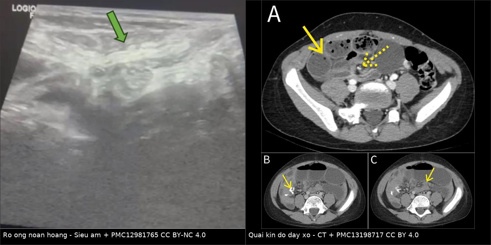
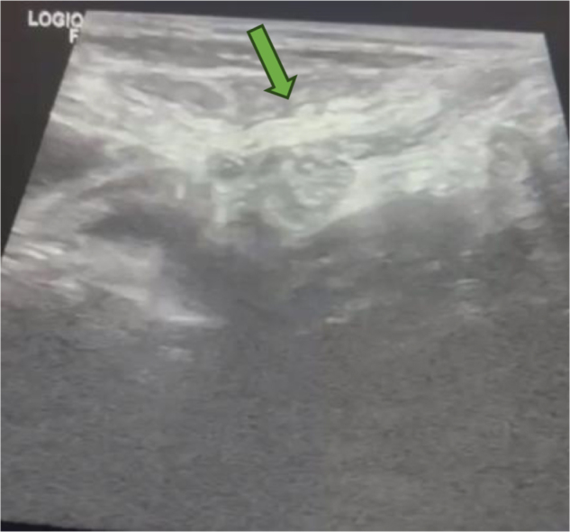
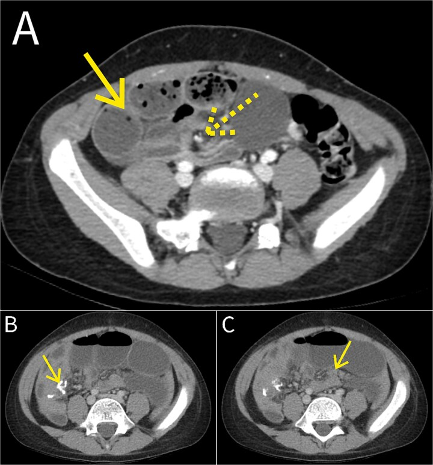
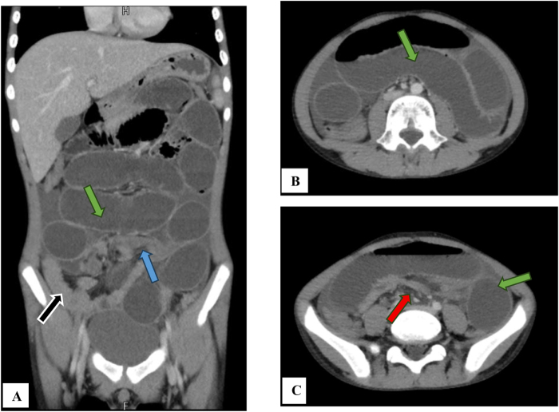
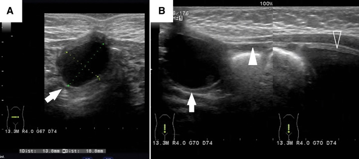

3135 — Rò túi thừa Meckel ra rốn & dây xơ mạc treo Meckel: hai mặt của cùng di tích ống noãn hoàng / Omphalomesenteric fistula & mesodiverticular band
Tags: pattern:ro-ron pattern:tac-ruot pattern:quai-kin pattern:day-xo vung:ruot-non vung:thanh-bung vung:ron-bung protocol:CT-bung-co-can-quang protocol:sieu-am
Mức chắc chắn (certainty): tổng hợp y văn (literature synthesis) — số liệu từ đoàn hệ 310 trẻ có túi thừa Meckel triệu chứng (PMC13219009), ca có ảnh CT–siêu âm (PMC12981765, PMC13198717, PMC12197850), loạt 28 trẻ rối loạn rốn (PMC11298018), tổng quan hệ thống Littre 98 ca (PMC10253297 — dùng cho phần phân biệt) và các tổng quan di tích ống noãn hoàng (PMC11415136, PMC12554794). Câu là suy luận được ghi [suy luận].
Vì sao bài này quan trọng: 1872 đã phủ túi thừa Meckel đi lạc vào túi thoát vị. Nhưng cùng một di tích ống noãn hoàng (omphalomesenteric duct, OMD) còn hai mặt khác thường gặp hơn ở trẻ: (1) ống không đóng kín → rò ruột ra rốn, chảy dịch/không lành da rốn; (2) ống đóng kín nhưng mạch ống noãn hoàng còn lại thành dây xơ → quai ruột chui qua → tắc ruột quai kín, thiếu máu ruột trong 6–12 giờ. Cả hai bị chẩn đoán muộn vì: rò rốn bị coi là u hạt rốn (điều trị bằng nitrate bạc mãi không khỏi), còn dây xơ hầu như không thấy trực tiếp trên CT — chẩn đoán trước mổ chỉ đạt 5,9% (4/28) trong một loạt có triệu chứng (PMC11415136).
1. Tổng quan bệnh học – cơ chế hình ảnh (TẠI SAO)
1.1 Một ống phôi, năm kiểu tồn tại
- Ống noãn hoàng (vitelline/omphalomesenteric duct) nối trung tràng với túi noãn hoàng; bình thường teo và biến mất trong tuần 5–9 thai. Khi không teo hết, tồn tại 5 dạng: túi thừa Meckel (đoạn trong ổ bụng), dây xơ (fibrous cord), xoang rốn (umbilical sinus), rò ruột–rốn (patent duct/enteric fistula), nang ống noãn hoàng / polyp rốn.
- Tần suất: di tích OMD gặp ở ~2% dân số; trong đó túi thừa Meckel chiếm 97% — nhưng ống thông hoàn toàn (patent VID) lại là thể hay có triệu chứng nhất (PMC12554794). Nghĩa là: cái hiếm lại là cái hay phải xử lý.
- Túi thừa Meckel: quy tắc 2 — 2% dân số, cách ~60 cm van hồi manh tràng, dài ~5 cm; mô lạc chỗ (dạ dày/tụy) ~50%; nguy cơ biến chứng suốt đời 4%; trong đó chảy máu 4%, tắc ruột 6% (PMC11415136, PMC13544801).
- Vì sao rò rốn chảy dịch mãi: ống thông có niêm mạc ruột/dạ dày lạc chỗ → tiết dịch và acid → da quanh rốn bị ăn mòn, không bao giờ liền; đôi khi sa niêm mạc ra ngoài thành khối đỏ như quả mâm xôi.
1.2 Vì sao dây xơ mạc treo gây tắc ruột quai kín (và vì sao nguy hiểm)
- Dây xơ mạc treo Meckel (mesodiverticular band, MDB) là di tích động mạch ống noãn hoàng còn lại trong mạc treo — một dải xơ đi từ đỉnh túi thừa tới mạc treo/thành bụng trước. Dải xơ này có ở 1–4% dân số (PMC11415136).
- Khi một quai hồi tràng chui qua lỗ do dây xơ + túi thừa + mạc treo tạo ra, quai ruột bị giam hai đầu → quai kín. Quai kín không thể giảm áp bằng sonde dạ dày vì không thông với phần ruột còn lại.
- Trình tự mạch máu: ứ tĩnh mạch → phù thành → áp lực trong lòng tăng → tắc động mạch → hoại tử trong 6–12 giờ [suy luận từ sinh lý quai kín, xem 162]. Đây là lý do quai kín là cấp cứu ngoại khoa, không phải "theo dõi thêm 24 giờ".
- Số liệu lịch sử: Manning & McLaughlin (1947) ghi nhận tử vong gần 100% khi ruột bị nghẹt do MDB không mổ — con số này không dùng để tiên lượng hôm nay, nhưng giải thích vì sao đây là chẩn đoán không được bỏ sót (PMC11415136).
- Vì sao khó chẩn đoán trước mổ: dây xơ mảnh, không cản quang, nằm giữa các quai ruột → trên CT chỉ thấy hệ quả (điểm chuyển tiếp, dấu xoáy, quai C/U), không thấy "sợi dây". Trong loạt có triệu chứng, chỉ 4/28 (5,9%) được chẩn đoán trước mổ (PMC11415136).
1.3 Số liệu định lượng cốt lõi
| Chỉ số | Con số | Nguồn |
|---|---|---|
| Di tích OMD trong dân số | ~2%; Meckel = 97% di tích OMD | PMC12554794 |
| Nguy cơ biến chứng suốt đời của Meckel | 4% (chảy máu 4%, tắc ruột 6% trong các thống kê khác nhau) | PMC11415136 |
| Mô lạc chỗ trong Meckel | ~50% | PMC13544801 |
| Dây xơ mạc treo (di tích động mạch noãn hoàng) | 1–4% dân số | PMC11415136 |
| Chẩn đoán trước mổ khi có triệu chứng | 5,9% (4/28) | PMC11415136 |
| Rộng túi thừa và nguy cơ chảy máu (310 trẻ) | quan hệ hình chữ U ngược, đỉnh nguy cơ ở ~1,25 cm; tương tác với mô lạc chỗ | PMC13219009 |
| Loạt rối loạn rốn ở trẻ | 28 trẻ khám → 10 có di tích OMD/niệu rốn; biểu hiện: viêm rốn 4, chảy dịch rốn 3, đau bụng 2, khối rốn 1; siêu âm dùng 10/10, CT 7/10 | PMC11298018 |
| Tỷ lệ nam:nữ khi có triệu chứng ở trẻ | 3:1 (58% vs 42% ở người lớn) | PMC11415136 |
2. Mẫu hình + chẩn đoán phân biệt theo bệnh cảnh (Gamut)
Hai câu hỏi lâm sàng khác nhau, hai gamut khác nhau — đừng gộp:

Trái: siêu âm — cấu trúc ống cùng tận ở bụng dưới. Phải: CT — quai kín với dấu xoáy mạc treo và quai ruột giãn. Cùng một di tích, hai kiểu biểu hiện. Ảnh ghép letterbox từ PMC12981765 (CC BY-NC 4.0) + PMC13198717 (CC BY 4.0).2.1 Trẻ chảy dịch rốn / viêm rốn kéo dài (gamut "rốn ướt")
- Rò ống noãn hoàng (rò Meckel ra rốn): lỗ rốn ướt liên tục, có thể sa niêm mạc đỏ, da quanh rốn viêm đỏ–loét; bơm thuốc cản quang qua lỗ rốn thấy ống đi xuống ổ bụng đổ vào hồi tràng.
- U hạt rốn (umbilical granuloma): mô hạt đỏ, mềm, không có lỗ thông, đáp ứng nitrate bạc sau 2–3 lần.
- Polyp rốn: niêm mạc ruột thật, không đáp ứng nitrate bạc, dễ chảy máu khi chạm; là di tích OMD.
- Rò/u nang niệu rốn (urachal): dịch trong, đường đi xuống dưới về phía bàng quang (xem 1719); phân biệt bằng VCUG hoặc siêu âm đường đi.
- Viêm rốn (omphalitis): đỏ, sưng, chảy mủ, sốt — nhiễm khuẩn, không có ống thông; siêu âm tìm áp-xe dưới da.
- Nang ống noãn hoàng: khối dịch kín dưới rốn, không thông ra ngoài; có thể thành dây xơ gây tắc ruột khi vỡ/nhiễm.

Siêu âm bụng: cấu trúc ống/cùng tận (mũi tên) nằm cạnh các quai ruột giãn — gợi ý túi thừa Meckel hoặc ống rò. Nguồn: PMC12981765, CC BY-NC 4.0.2.2 Trẻ tắc ruột không có tiền sử mổ (gamut "quai kín")
- Dây xơ mạc treo Meckel (MDB): tắc ruột cao, đau từng cơn, nôn mửa; CT có dấu xoáy mạc treo, điểm chuyển tiếp, quai ruột hình chữ C/U.
- Dây xơ OMD từ túi thừa tới rốn: giống MDB nhưng dây đi tới thành bụng trước — trên CT thấy điểm chuyển tiếp sát thành bụng, có thể kèm khối/ống ở rốn.
- Thoát vị nội bẩm sinh: lỗ trong mạc treo/mạc nối; CT có túi thoát vị + quai kín, không có dây tới rốn.
- Xoắn ruột non nguyên phát: dấu xoáy rõ, thiếu máu sớm, thường ở trẻ lớn.
- Lồng ruột non–non: dấu bia/ruột trong ruột (xem 3128); khác quai kín.
- Thoát vị Littre: túi thừa nằm trong túi thoát vị (xem 1872).

*(A) CT có cản quang: các quai ruột non giãn, ứ phân (faecalization); dấu xoáy mạc treo (mũi tên nét đứt) và quai giãn (mũi tên liền) — nghĩ tắc ruột cao độ. (B, C) CT sau mổ: miệng nối và quai giãn còn lại. Ca: bé trai 8 tuổi, mổ xác nhận túi thừa Meckel hoại tử + quai hồi tràng xoắn quanh dây xơ ống noãn hoàng. Nguồn: Taher O et al., J Surg Case Rep 2026 (PMC13198717), CC BY 4.0.*3. Bảng so sánh phân biệt (ma trận đối chiếu)
| Thực thể (entity) | Hình ảnh điển hình | Chốt vào (rule-in) | Chốt loại (rule-out) | Gợi ý xác nhận |
|---|---|---|---|---|
| Rò ống noãn hoàng ra rốn | Ống hồi âm từ rốn xuống ổ bụng, đổ vào hồi tràng; có thể thấy khí trong ống; da rốn loét | Chảy dịch rốn liên tục + ống nối rốn–hồi tràng trên siêu âm/chụp cản quang qua lỗ rốn | Đường đi xuống bàng quang → rò niệu rốn; khối đặc không lỗ thông → u hạt/polyp | Siêu âm rốn + bơm cản quang qua lỗ rốn; VCUG nếu nghi niệu rốn |
| U hạt rốn | Khối đặc, mềm, không lỗ thông, không có ống | Đáp ứng nitrate bạc 2–3 lần | Không đáp ứng, chảy máu khi chạm, có ống → polyp/rò OMD | Thử nitrate bạc; nếu thất bại → siêu âm + cắt bỏ |
| Polyp rốn | Khối niêm mạc đỏ, có thể sa ra, chảy máu | Mô niêm mạc ruột/dạ dày trên mô bệnh; không đáp ứng nitrate bạc | Không có niêm mạc, mô hạt → u hạt rốn | Cắt bỏ + mô bệnh học |
| Rò/nang niệu rốn | Nang/ống dưới rốn, đường đi xuống bàng quang, có thể nhiễm thành áp-xe | Đường đi tới đỉnh bàng quang + VCUG | Đường đi tới hồi tràng → OMD | Siêu âm + VCUG; xem 1719 |
| Dây xơ mạc treo (MDB) | Điểm chuyển tiếp + dấu xoáy mạc treo, quai ruột C/U, quai kín | Tắc ruột ở trẻ không mổ trước + dấu xoáy + quai kín trên CT | Dấu bia/ruột trong ruột → lồng ruột; quai trong túi thoát vị → Littre | CECT bụng–chậu; mổ nội soi |
| Dây xơ OMD tới rốn | Điểm chuyển tiếp sát thành bụng trước, kèm ống/khối ở rốn | Tắc ruột + bất thường rốn cùng lúc | Không có bất thường rốn, dây nằm trong mạc treo → MDB | Siêu âm rốn + CT; hỏi kỹ tiền sử rốn ướt |
| Thoát vị nội bẩm sinh | Túi thoát vị trong mạc treo, quai kín, không dây tới rốn | Quai kín + lỗ mạc treo | Có dây xơ tới rốn/túi thừa → OMD | CT; mổ |
| Lồng ruột non–non | Dấu bia, ruột trong ruột, ít dịch tự do sớm | Dấu bia + khối lồng | Quai kín có xoáy, không có khối lồng | Siêu âm trước, CT nếu không rõ |

CT có cản quang: (A) mặt phẳng vành — quai ruột non giãn (mũi tên xanh lá), điểm chuyển tiếp ở hồi tràng đoạn cuối (mũi tên xanh dương) với dải xơ đi từ thành ruột tới thành bụng trước (mũi tên đen); (B, C) trục — quai giãn và mức dịch. Ca: bé trai 12 tuổi, sốc nhiễm khuẩn do tắc ruột; mổ xác nhận dải xơ ống noãn hoàng. Nguồn: PMC12981765, CC BY-NC 4.0.3.1 Đọc chuẩn xác: bốn dấu hiệu quyết định "quai kín"
- Điểm chuyển tiếp (transition point): nơi quai giãn đột ngột chuyển sang quai xẹp; đo đường kính hai bên (thường chênh > 2 lần).
- Dấu xoáy mạc treo (mesenteric swirl): mạch máu và mỡ mạc treo xoắn quanh trục — dấu mạnh nhất của xoắn/quai kín.
- Hình dạng quai: quai kín thường hình chữ C/U, chứa đầy dịch, hai đầu kẹp sát nhau.
- Thiếu máu ruột: thành ruột không ngấm thuốc, dày thành, khí trong thành (pneumatosis), khí trong tĩnh mạch cửa — dấu muộn, đừng chờ mới mổ.
4. Protocol + xử trí
4.1 Chẩn đoán hình ảnh
- Rốn ướt: siêu âm là bước 1 (không bức xạ, trẻ hợp tác kém vẫn làm được): đầu dò cao tần, quét dọc từ rốn xuống, đo đường kính ống (mm), tìm khí trong ống, Doppler thành ống. Sau đó bơm cản quang qua lỗ rốn (fistulography) để xác định đổ vào hồi tràng hay bàng quang; VCUG khi nghi niệu rốn. CT không cần cho rò đơn thuần, chỉ khi có áp-xe/khối.
- Nghi tắc ruột: X-quang bụng đứng/ngửa (mức khí–dịch, bóng hơi) → CT bụng–chậu có cản quang là chìa khóa để phát hiện quai kín. Siêu âm hữu ích ở trẻ nhỏ (dấu xoáy, dịch tự do) nhưng không loại trừ quai kín.
- Không dùng MRI thường quy cho cấp cứu bụng ở trẻ (thời gian, an thần) — CT nhanh hơn.
- Đo và ghi: đường kính ống rò (mm), đường kính túi thừa (mm — mốc nguy cơ chảy máu ~1,25 cm), chiều dày thành ruột, lượng dịch tự do.
4.2 Ngưỡng và quyết định
- Rò OMD xác định → mổ cắt ống rò + cắt túi thừa Meckel (không chỉ thắt ống): bỏ lại túi thừa = còn mô lạc chỗ, còn nguy cơ chảy máu/tắc ruột.
- Túi thừa Meckel tình cờ trong mổ khác: cắt nếu dài > 2 cm, có mô lạc chỗ, dây xơ, hoặc cổ hẹp [thực hành đồng thuận, chưa có thử nghiệm].
- Quai kín/thiếu máu ruột → mổ cấp cứu, không chờ hết hội chứng đáp ứng viêm; cắt đoạn ruột hoại tử + nối.
- Kháng sinh trước mổ khi có viêm rốn/áp-xe; dẫn lưu chỉ khi đã loại trừ rò ruột (xem §5).
- Sau mổ: theo dõi tắc ruột sớm do dính — ca PMC13198717 tái tắc ngày 7 sau mổ do dải mạc nối, phải mổ lại.
4.3 Sơ đồ tiếp cận
flowchart TD
A[Trẻ chảy dịch rốn hoặc viêm rốn kéo dài] --> B[Siêu âm rốn và bụng: tìm ống, khí trong ống, áp-xe]
B --> C{Có ống đi xuống ổ bụng?}
C -->|Có| D[Bơm cản quang qua lỗ rốn hoặc VCUG]
D --> E{Đổ vào hồi tràng hay bàng quang?}
E -->|Hồi tràng| F[Rò ống noãn hoàng: mổ cắt ống và túi thừa]
E -->|Bàng quang| G[Di tích niệu rốn: xử trí theo 1719]
C -->|Không| H{Đáp ứng nitrate bạc sau 2 đến 3 lần?}
H -->|Có| I[U hạt rốn: tiếp tục bôi tại chỗ]
H -->|Không| J[Polyp hoặc rò kín: cắt bỏ và mô bệnh học]
K[Trẻ tắc ruột không có tiền sử mổ] --> L[X-quang bụng rồi CT có cản quang]
L --> M{Có dấu xoáy hoặc quai kín?}
M -->|Có| N[Mổ cấp cứu: cắt dây xơ và túi thừa]
M -->|Không rõ| O[Siêu âm lại, theo dõi sát 6 đến 12 giờ, không để quá 24 giờ]
5. Biến thể bình thường và cạm bẫy
- U hạt rốn "không khỏi" là một chẩn đoán sai, không phải thất bại điều trị: sau 2–3 lần nitrate bạc mà vẫn ướt → phải siêu âm + cắt bỏ. Polyp/rò OMD không đáp ứng nitrate bạc.
- Siêu âm bình thường không loại trừ dây xơ: dây xơ mảnh, có thể nằm giữa quai ruột; chẩn đoán dựa vào hệ quả (quai kín/điểm chuyển tiếp). Trong loạt có triệu chứng, chẩn đoán trước mổ chỉ 5,9%.
- Đừng chọc/dẫn lưu "áp-xe quanh rốn" trước khi loại trừ rò ruột: dẫn lưu một ổ thông với ruột → rò phân ra da, nhiễm trùng lan. Ca PMC13344074 cho thấy áp-xe dưới rốn có thể là di tích OMD + niệu rốn đồng thời.
- Niệu rốn ≠ noãn hoàng: cùng ở rốn, cùng chảy dịch, nhưng đường đi khác (bàng quang vs hồi tràng) và xử trí khác. Ảnh dưới: nang 2 cm dưới rốn + đường hồi âm đi tới bàng quang — di tích niệu rốn, không phải OMD.

(A) Nang 2 cm ngay dưới rốn (mũi tên). (B) Đường hồi âm từ nang đi xuống bàng quang (đầu mũi tên) — gợi ý di tích niệu rốn; bệnh nhi này có đồng thời di tích ống noãn hoàng. Nguồn: Oyachi N, Numano F, Surg Case Rep 2025 (PMC12197850), CC BY 4.0.- Rò OMD có thể biểu hiện ở người lớn như đau hố chậu phải giả viêm ruột thừa (ca 26 tuổi — PMC12435763) hoặc tắc ruột (PMC11272375); đừng loại trừ chỉ vì bệnh nhân lớn tuổi.
- Chảy máu Meckel không đau, không có khối: khác lồng ruột (đau từng cơn + khối); nội soi/CT có thể âm tính — xạ hình Meckel hoặc chụp mạch khi nghi cao.
- Bỏ lại túi thừa sau khi cắt dây xơ là lỗi thường gặp: dây xơ chỉ là triệu chứng, túi thừa + mô lạc chỗ mới là nguồn biến chứng.
6. Tự lượng giá — Blind Quiz
Ca 1 — Bé trai 12 tuổi, sốc nhiễm khuẩn, bụng chướng, nôn ra dịch xanh. Nhìn CT trước, mô tả trước.
- Hỏi: dấu hiệu chính? Vì sao gọi là "quai kín"? Cần làm gì tiếp?
Bấm để hiện đáp án
- Quai ruột non giãn, điểm chuyển tiếp ở hồi tràng đoạn cuối, dải xơ từ thành ruột tới thành bụng trước → tắc ruột do dây xơ ống noãn hoàng.
- "Quai kín" vì quai ruột bị giam hai đầu, không thông với phần còn lại → không giảm áp được bằng sonde, nguy cơ thiếu máu trong 6–12 giờ.
- Mổ cấp cứu (nội soi hoặc mở), cắt dây xơ + cắt túi thừa; kháng sinh, bù dịch.
- Nguồn: PMC12981765, CC BY-NC 4.0.
Ca 2 — Bé trai 8 tuổi, đau bụng 1 tuần, nôn, CT có dấu xoáy.
- Hỏi: hai dấu hiệu trên CT? Nguyên nhân ít gặp nhưng phải nghĩ? Vì sao tái tắc sau mổ?
Bấm để hiện đáp án
- Dấu xoáy mạc treo (mũi tên nét đứt) + quai ruột giãn ứ phân (mũi tên liền) → tắc ruột quai kín.
- Nguyên nhân: túi thừa Meckel hoại tử xoắn quanh dây xơ ống noãn hoàng bám thành bụng trước.
- Tái tắc ngày 7 sau mổ do dải mạc nối quanh miệng nối → cần mổ lại; đây là lý do phải theo dõi sát sau mổ.
- Nguồn: Taher O et al., J Surg Case Rep 2026 (PMC13198717), CC BY 4.0.
Ca 3 — Bé gái 4 tháng, rốn ướt từ lúc sinh, bôi nitrate bạc 3 lần không khỏi. Siêu âm:
- Hỏi: chẩn đoán? Cần thêm thông tin gì để phân biệt với rò ống noãn hoàng? Xử trí?
Bấm để hiện đáp án
- Nang 2 cm dưới rốn + đường đi tới bàng quang → di tích niệu rốn (nang/ống niệu rốn), không phải rò ống noãn hoàng.
- Cần VCUG hoặc bơm cản quang qua lỗ rốn để xác định đường đi; siêu âm bàng quang đánh giá liên quan.
- Xử trí: cắt bỏ đường rò/nang (nội soi hoặc mở); kháng sinh nếu nhiễm; không chỉ bôi nitrate bạc.
- Nguồn: Oyachi N, Numano F, Surg Case Rep 2025 (PMC12197850), CC BY 4.0 — bệnh nhi có đồng thời di tích ống noãn hoàng.
Bài liên quan chéo
- 1872 – Thoát vị Littre: túi thừa Meckel trong túi thoát vị
- 162 – Tắc ruột non/già, quai kín & thiếu máu mạc treo
- 1719 – Bàng quang đôi, vách bàng quang và nang niệu rốn ở trẻ
- 3128 – Lồng ruột non–non ở người lớn
Không dùng để chẩn đoán độc lập khi chưa có người hướng dẫn.